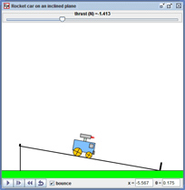
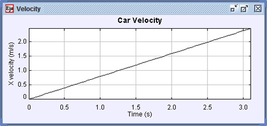

|  |  |
This simulation uses Easy Java Simulations (Ejs) to model the problem of a rocket car on an incline plane. When the car reaches the bottom of the incline it can be set to bounce (elastic collision) with the stop attached to the bottom of the incline. The total mass of the car is 2.0 kg which consists of the car body (1 kg), two front wheels (0.4 kg) and two rear wheels (0.6 kg). The front and rear wheels rotate and are uniform disks. In the simulation you can set the incline angle (in radians), the bounce, the thrust of the car's rocket (in Newtons), and you can drag the car to its initial position.
Questions
1. Calculate the change in potential energy of the car when it reaches the bottom of the incline. Your answer should be given in terms of the mass of the car body mB, the mass of the front and rear wheels, mF and mR, the incline angle θ, and the distance the car moves down the incline, L.
2. Calculate the velocity of the car at the bottom of the incline when subject to an arbitrary thrust, T, from its rocket. Don't forget that the wheels of the car rotate. Your answer should be given in terms of the variables described in Question 1 and the thrust, T. Once you have a general form for the velocity, check your answer against the simulation.
3. Given the velocity you found in Question 2, determine the acceleration of the car subject to an arbitrary thrust, T. Again your answer should be given in terms of the variables described in Question 1. Once you have a general form for the acceleration, check your answer against the simulation. Also find the thrust that yields zero acceleration of the rocket.